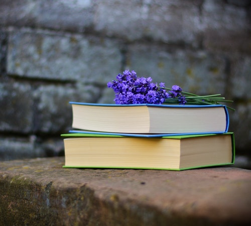

Importance Of Reading Books
"A room without books is like a body without a soul."
Books play a very important role in everyones life, especially in a students life. They are our best friends because they inspire us to do great things in life and overcome our failures. We learn a lot of things from them. Books are our best companions as they provide us knowledge unconditionally without asking anything in return.Friendship with good books makes you a good person. In case when there is no one for your help, only these will become your companion in life. Books< will always be there for you in your adverse times and bring positive value to our life.For students, it is worth saying that "A good book is like a good friend; the more you read it, the more interesting it will be. They have always benefit to the reader."
Benefits of Reading Books: How It Can Positively Affect Your Life
1.Strengthens the brain.
2.Builds vocabulary.
3.Prevents cognitive decline.
4.Reduces stress.
5.Aids sleep.
6.Alleviates depression.
7.Lengthens lifespan.


Books improve communication skills
Books helps in a great deal to improve communication and vocabulary of an individual. It enables the reader to develop better language skills which further develops the fluency of the language helping in expressing or communicating the ideas effectively.
Books Educate Us
Books are the best friends who are hungry for knowledge. It helps significantly in understanding diverse cultures and comprehends the history of things. Knowledge of new languages certainly helps an individual to improvise and move forward in life. There are books of infinite genres from history to problem solvers from cooking to biographies.
Books Keep the Brain Healthy
Books are considered to be the best friends of the brain. It’s like a gym where the brain can exercise and empower itself. It stimulates the blood flow in the brain and helps in keeping diseases like dementia and Alzheimer’s at bay. So the more one reads more it helps the brain to stay fit. It also helps in cognitive function and helps in improving the memory substantially. It also helps in developing the analytical skill of the individual.
Books Reduce Stress and Anxiety
Stress and Anxiety is the biggest enemy of a healthy mind. In current times, it is very difficult to cope with them. Lifestyle, work, and peer pressure contribute to significantly increasing tension. In these situations, one can certainly look towards books based on science fiction, romantic novels, and even autobiographies, apart from giving knowledge these books work as an excellent stress buster. With an infinite range of books in these genres, one can certainly keep the doctor away.
Facebook Page
Twitter
Facebook Profile
Github Profile